The Clock
Naviondark
- 受付NPC
- Librarian Parks
- 場所
- Museidon Library Archive
- 参加条件
- Lv96〜135 / 4〜8人
TEMPLAR / タンク / 自己回復・補助
自己回復と防御強化で前線を維持する系統。序盤を乗り越えながら、仲間を守るSaint Guardianへ成長します。Templarは「テンプラー」と表記しています。
CLASS OVERVIEW
自己回復と防御強化を持ち、前線を維持しながら戦う系統です。Chain Block・Dead Lock・Divine Descentなど範囲攻撃も習得し、回復・妨害・防御を組み合わせて戦えます。
STATUS GUIDE
公式職業紹介ではPOWを中心にMENを検討し、中盤以降はSTAも候補とされています。一方、今回のプレイヤー向け育成例では、まずAGIを優先し、その後に必要な分だけPOWを追加する方針を採用します。
公式：Templar紹介 ↗ 公式Lexicon：Status Point ↗COMMUNITY BUILD
以下はプレイヤー向けの推奨育成方針であり、公式が指定する固定ステータスではありません。
育成の前半はAGIを優先。回避を意識した前衛型として育て、複数の敵を相手にする際の安定性を高める考え方です。
AGIを確保した後は、装備や狩りで必要になる分を見ながらPOWへ振ります。POWを最初から固定値にせず、必要量に合わせて調整します。
LEVEL GUIDE
Ward、Sustain、Assist Healなどを使いながら基本戦闘を習得。プレイヤー育成例ではAGIを優先して伸ばします。
Chain Block、Saint Rising、Dead Lockなどが加わり、範囲戦闘と防御面が強化。AGIを軸に必要に応じてPOWを追加します。
Great SphereやAuto Genesisなど回復手段が増加。装備・狩場に合わせてAGIとPOWのバランスを調整します。
Introspection、Counter Measure、Divine Descentなど上位スキルを習得。必要なAGIを確保した後はPOWを追加して仕上げます。
レベル帯はこのページに掲載されている転職Lvとスキル習得条件をもとに整理しています。AGI優先の配分はコミュニティ育成例です。
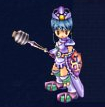
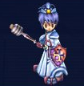


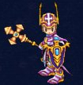
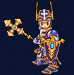
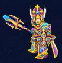
画像出典：公式職業紹介。各段階の2種類の外見を掲載しています。
場所名はゲーム内で探しやすい英語表記です。テンプラー上位職は公式紹介にHoly Avanger、転職ガイドにHoly Avengerの表記があります。
公式Lexiconの早見表に載っている全項目を収録。効果は日本語の要約です。
右欄は「スキルLv：必要キャラクターLv」。公式表の空欄は省略しています。MP・持続時間・再使用時間は全件が公開されていないため、記載のある情報のみを要約しています。ゲーム内の最新表示を優先してください。
| スキル | 効果・消費アイテム | 各スキルLvの習得条件 |
|---|---|---|
Ward | 近接攻撃。確率で対象の攻撃力を下げる。 | Lv1: 16 / Lv2: 31 |
Sustain | 自身のHPを回復。回復量は攻撃力に応じる。 | Lv1: 16 |
Assist Heal | HPを継続回復する。 | Lv1: 21 / Lv2: 41 / Lv3: 61 / Lv4: 81 / Lv5: 101 / Lv6: 121 |
Brace Up | 自身の攻撃力を強化。 | Lv1: 36 / Lv2: 56 / Lv3: 76 / Lv4: 96 / Lv5: 116 / Lv6: 136 |
Time Shield | 近接攻撃にDizzy（行動妨害）を付与。 | Lv1: 36 / Lv2: 51 / Lv3: 76 / Lv4: 101 / Lv5: 126 / Lv6: 151 |
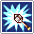 Force Blast | 近接攻撃。確率でスタンを付与。 | Lv1: 41 / Lv2: 61 / Lv3: 81 / Lv4: 101 / Lv5: 121 / Lv6: 141 |
Protection | 自身の防御を強化。 | Lv1: 41 / Lv2: 61 / Lv3: 81 / Lv4: 101 / Lv5: 121 / Lv6: 141 |
Shake Mind | ボス由来ではない行動妨害を解除。 | Lv1: 46 / Lv2: 61 |
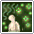 Eurosia | 周囲の対象の最大HP・MPを強化。Wisdom Orbを1個消費。 | Lv1: 56 / Lv2: 76 / Lv3: 96 |
Burning Hands | 対象の動きを止める。対象が攻撃されると解除。 | Lv1: 61 / Lv2: 81 / Lv3: 101 / Lv4: 121 / Lv5: 141 |
Chain Block | 小範囲の攻撃。対象の攻撃力を10下げる。 | Lv1: 66 |
Saint Rising | 短時間、自身の防御を大きく強化。 | Lv1: 71 / Lv2: 91 / Lv3: 111 |
Dead Lock | 広い範囲を攻撃。対象の攻撃力を10下げる。 | Lv1: 81 / Lv2: 101 / Lv3: 121 / Lv4: 141 |
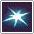 Evil Dead | 近接攻撃。確率でスタンを付与。 | Lv1: 86 / Lv2: 106 / Lv3: 126 / Lv4: 146 |
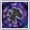 Repentance | 周囲の敵の移動速度を下げる広範囲スキル。 | Lv1: 91 / Lv2: 121 / Lv3: 141 / Lv4: 161 |
Great Sphere | 指定地点の周囲の対象のHPを継続回復。 | Lv1: 96 |
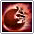 Auto Genesis | 被弾ごとに33%の確率で自身を回復。Gracious Orbを1個消費。 | Lv1: 111 / Lv2: 131 / Lv3: 151 |
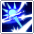 Purge | 敵1体への近接攻撃。 | Lv1: 126 / Lv2: 141 / Lv3: 156 |
Introspection | 自身のMENと移動速度を一時的に強化。 | Lv1: 131 / Lv2: 156 |
Counter Measure | 自身の与ダメージを10%強化。 | Lv1: 136 |
Divine Descent | 自身の周囲へ範囲攻撃。 | Lv1: 146 / Lv2: 166 / Lv3: 186 |
Plutan's Gift | 周囲の対象のMPを継続回復。 | Lv1: 151 |
Lv16〜61の初期スキルブックはEsseneのSkill Book Merchantで購入できます。公式一覧では上位のスキルブックは該当レベル帯のマップでドロップすると案内されています。
公式：Skill Book Locations ↗CLASS CHANGE
各段階の準備から転職完了まで、このページで確認できます。
初めての転職
Lv16になったらArcarinas Square / BrynhilldのReinmothへ。Apply for class changeを選びます。
受注すると希望職業のギルドへ転送されます。転職前にすべての装備を外します。
MordineのBecome a Templarを選んで転職します。転職後の職業はDiscipleです。
受け取った初期装備とスキルブックを確認します。
転送先：Acolytes Guild / Essene / 担当：Mordine
3色のDemon Bloodと指定装備
Reinmoth（Arcarinas Square / Brynhilld）またはReilath（Essene）から転職クエストを受けます。
受注した案内NPCに赤・青・黄を各1個納品します。
EsseneのWeapon MerchantでClub of Truth、Armor MerchantでArmor of Starlightを各1個購入。材料を所持してAlchemistへ行き、Spirit Orbを作成します。
作成したSpirit Orbを受注した案内NPCへ戻して渡すと、Jureah’s Blessingを受け取ります。
Jureah’s BlessingをMordineへ。装備をすべて外し、I swearで転職します。保留する場合はLet me thinkを選びます。
Jureah’s Blessingの届け先：Mordine / Acolytes Guild / Essene
公式本文はAlchemistを作成先としていますが、NPC表にはBlacksmithも掲載されています。追加の移動を指示された場合は受注中の案内に従ってください。メイジ担当はBetran / Beltran、町はBrynhild / Brynhilldの表記があります。
英雄名の回答と共通納品
ReinmothまたはReilathから受注し、受け取った手紙を担当ギルドマスターへ届けます。下の訪問順も確認してください。
Name of Legendary Heroの答えはRayna。英語表記で回答します。
ギルドマスターの指示と訪問順に沿って進めます。NPCごとの細かな会話や追加条件は、進行中のクエスト表示を確認してください。
Xen Stone ×1・Yellow Watermelon ×5・Caricsobana ×2・50,000 Kronを、クエストで指定された相手へ納品します。
Yes, I swear an oathで転職。保留する場合はI need time to thinkを選びます。装備を外す必要はありません。
公式表のNPC訪問順
ボス素材と3つの試練
ReinmothまたはReilathから受注し、MordineでQuest Part 1を受けます。
下の討伐先を確認し、Rodney Garters・Tiger Dogma・Naviondark・Artpolyを集めます。納品数は受注中のクエストと照合してください。
ギルドマスターへ素材を納品し、Quest Part 2を受注します。
Eaglerentin PlainにあるMemorial Chapelへ入り、Saintに話しかけます。公式本文の道順はEirの東側から6マップ先です。
Saintから案内される火・水・毒の試練を完了します。
試練が終わっても、すぐに町へ戻らないでください。もう一度Saintに話しかけ、ギルドマスターへの案内を受けます。
Mordineへ戻り、転職の会話を完了します。装備を着けたままで進められます。
The Clock
Cow Legend
Fiersavier（虎）
Amaranth Wyrm
Amaranth Wyrmのインスタンス：公式Boss Instancesでは週1回、パーティリーダーが4次転職クエストを持っていることが条件です。各ボスの人数・レベル制限も出発前に確認してください。
NaviondarkはThe Clock、ArtpolyはCow Legendです。転職ガイドの色分け・2024年11月の訂正と、アイテムガイドのNaviondark欄を照合しています。2026年1月のコメントには逆の対応があるため、その部分は採用していません。
Rodney Gartersについては、公式ページのプレイヤーコメントにワールドボスのAmaranth Wyrmでも入手できるとの報告があります。この手順では、公式本文に掲載されたインスタンス経由を案内しています。
メイジのLv131：職業紹介の転職場所はMagicans Convene（Essene）、転職ガイドのNPC表はMordineで不一致があります。Mordineへの移動を断定せず、受注時の案内を確認してください。
公式：メイジの転職場所 ↗公式：Naviondarkの入手先 ↗転職手順確認：2026年9月20日。受注中のクエスト条件が異なる場合はゲーム内表示を優先してください。
公式：転職ガイド ↗公式：転職素材の入手先 ↗公式：ボス参加条件 ↗